草稿寄出前要處理三件事：開場那張照片裡拿盤子的是誰、明天實際要帶哪兩套水耕盤、去的人數。然後決定要不要拿掉 noindex。Three things to settle before sending: who is holding the plate in the opening photograph, which two plates actually go tomorrow, and how many people are coming. Then decide whether to drop noindex.
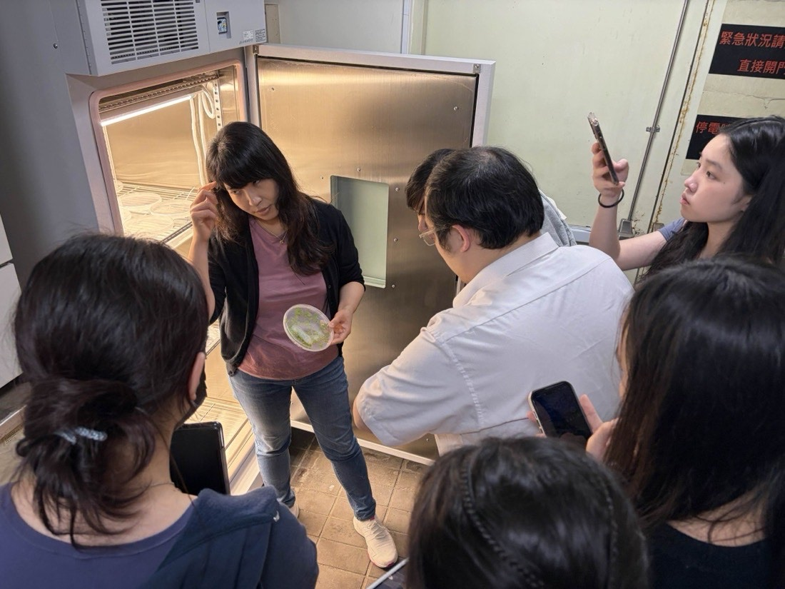
進度回報 2026 年 8 月 27 日 距 3/27 拜訪 153 天Progress update · 27 August 2026 · 153 days since 27 March
Professor Cheng, thank you for having us in your lab on 27 March. We did not even have a
settled project then, and you still gave us an afternoon, went through what growing Arabidopsis actually
takes, and shared your own hydroponic design and what you had learned from it. This page is the report back.
明天下午見面之前，這一頁想先做六件事
Six things this page is here to do before tomorrow afternoon
Bioprotectants are getting serious attention as a way to carry crops through stress, and they are
expensive to make, store and ship. Expensive enough that the people who need them cannot buy them. What we want
to try is not shipping them at all, and letting whoever needs one produce it where it is used. To show that works
we first need a plant stress model we trust. Most of this page is about that model.
2026-03-27，台大農化新館。培養箱前面示範阿拉伯芥的 agar plate，學生圍著錄影。待填：確認拿盤子的是老師本人還是實驗室的同學27 March 2026, NTU. An Arabidopsis plate held up in front of the growth chamber, students
filming. To confirm: who is holding the plate
3 月到 8 月，學生去了兩間公司、一塊田、一間標本館，和自己的實驗桌。March to August: two companies, one field, a specimen museum, and their own bench.
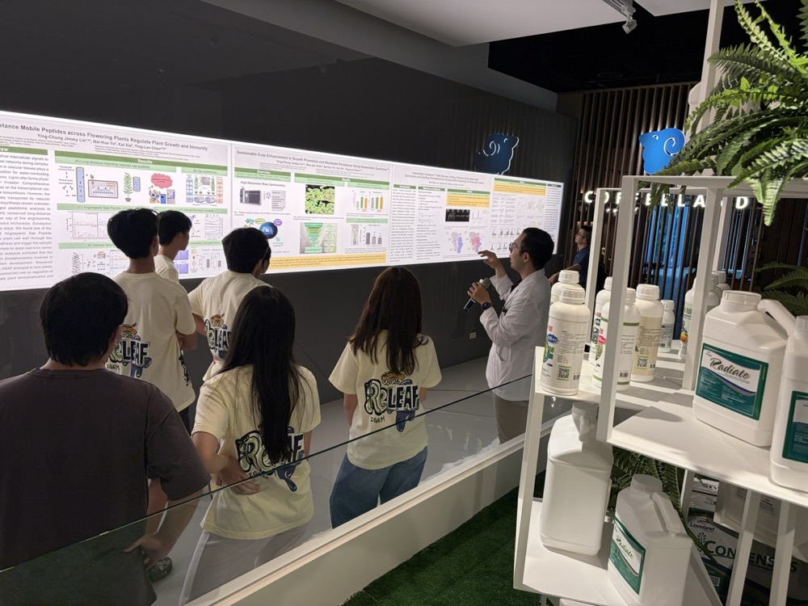
2026-07-09 正瀚科技。研究員說明他們的植物保護劑，右邊架上是實際的產品。我們 agar 實驗第七組用的胜肽是這裡來的。9 July 2026 · CH Biotech. A researcher explains their plant protectants; the shelves on
the right hold the products. The peptide in our seventh agar set came from here.
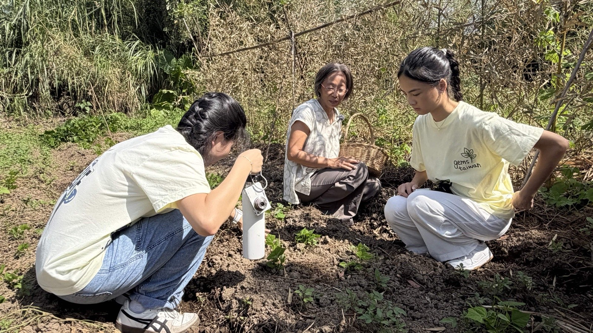
2026-07-21 拜訪陳惠雯老師。她提著剛採的作物，跟我們講今年的雨和收成。21 July 2026 · visiting the farmer Chen Hui-wen. She talked us through this year’s
rain and this year’s harvest, basket in hand.2026-08-13 週三下午的濕實驗室。同一個空間裡同時在跑植物、反應器和感測器測試。13 August 2026 · a Wednesday afternoon in the wet lab. Plants, reactor and sensor
testing all running in the same room.
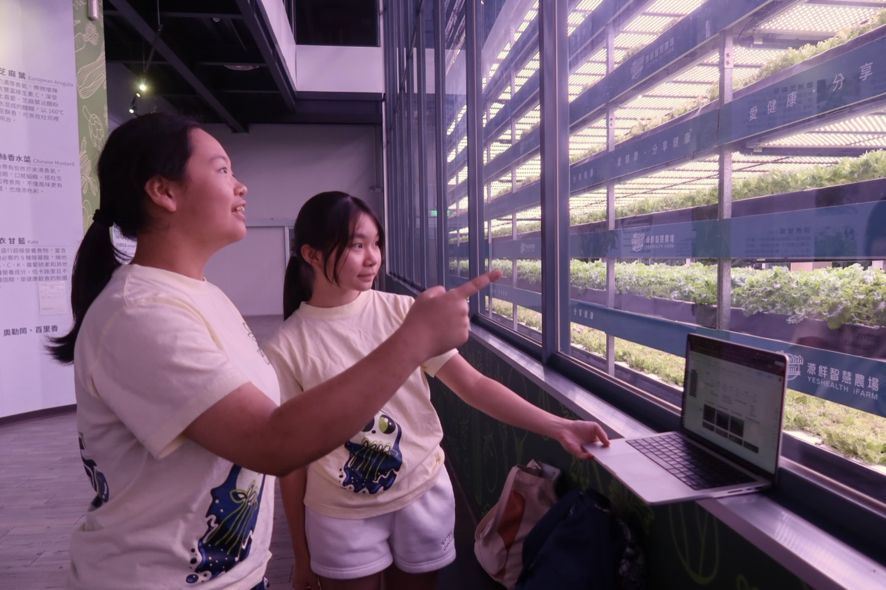
2026-08-11 源鮮智慧農場。十幾層的水耕牆，集中生產的另一端。11 August 2026 · YesHealth. A hydroponic wall more than a dozen tiers high, the other
end of the scale.
Contents
On this page
1153 天，五個數字153 days, five numbers
3/27 到今天，植物這一組跑了 agar、土、水耕三條線。下面五個數字各自代表一條線走到哪裡，
最後一個是我們還沒做的。Since 27 March the plant team has run three lines in parallel: agar, soil and hydroponics.
Four of these numbers say where a line got to. The last one is something we have not done.
那天的會議紀錄上，您給了六件具體的事。三件我們照做了，三件沒有。Our notes from that day carry six concrete things you told us. We did three of them.
您說的What you said
我們做的What we did
證據Evidence
狀態Status
先在 agar 上種苗，省空間、避開土壤變異、拿到同步的苗Germinate on agar first: it saves space, avoids soil variability and gives synchronised seedlings
八個實驗組全部從 agar 開始。第四組起改成直立方盤，讓根順著重力長，可以用 ImageJ 逐株量。這個改動是根長數據的來源。All eight sets start on agar. From set 4 we switched to vertical square plates so roots track gravity and each one can be traced in ImageJ. That change is where the root-length data comes from.
水耕對阿拉伯芥幼苗不穩定；把逆境化合物直接加進水裡，對根的作用不會如預期Hydroponics is unstable for Arabidopsis seedlings, and stress chemicals added straight to the water do not reach roots the way you expect
我們自己的數字同意您。前三個原型直接把種子下在培養液裡，發芽率 40 %、30 %、10 %，三個都污染。第四個改成把 agar 上長好的苗移進去，5 株全活。現在的盤是延續第四個的做法。Our own numbers agree with you. The first three prototypes sowed seed straight into the medium and germinated 40 %, 30 % and 10 %, all three contaminated. The fourth moved agar-grown seedlings in instead and all five lived. The current plate follows the fourth.
用表型和生化的輸出，不要只看基因表現Read phenotype and biochemistry, not only gene expression
三個讀值：ImageJ 量的主根長、鮮重、80 % 丙酮萃取的葉綠素 (645／663 nm)。基因表現一次都沒做。Three readouts: primary root length in ImageJ, fresh weight, and total chlorophyll extracted in 80 % acetone at 645 and 663 nm. No gene expression at all.
移植本身就是逆境，濕度掉、操作、乾燥都算，建議用保濕蓋擋一下The transfer is itself a stress: the humidity drop, the handling, the drying. Use a cover
3 天苗和 7 天苗同一天移植做年齡比較，這個做了。但移植當下沒有加保濕蓋。蓋子只出現在 8/10 直接下種的第 5、6 盤，而且是 8/13 被指出太乾以後才補上的。We did run the age comparison, three-day against seven-day seedlings moved on the same day. But no cover went on at the moment of transfer. Covers appear only on trays 5 and 6, which were sown directly on 10 August, and only after 13 August when someone pointed out they were too dry.
逆境等營養生長大約 14 天之後再施加，不要一移植完就上Apply stress after about fourteen days of vegetative growth, not straight after the transfer
我們 8/23 開始做 ACCD 處理，那是移植後第 28 天，照片裡植株已經抽苔開花、有些角果在拉長。Kyle 老師當天在紀錄上寫了「一般不會拿已經開花的植株做實驗」。這一組資料的解釋空間被我們自己弄掉了。We started the ACCD treatment on 23 August, day 28 after transfer. The photographs from that day show plants already bolted and flowering, some with siliques elongating. Kyle wrote it into the log the same day: you do not normally run experiments on plants that have already flowered. We took away our own ability to interpret that set.
用 33–35 °C 的熱休克當 proof-of-concept，溫和一點，不要把植物殺掉Use a 33 to 35 °C heat shock as the proof of concept, moderate enough not to kill them
做了熱逆境，但用的是 37 °C，比您說的高。四組（對照、前處理、同時、後處理）跑完，三個處理組的每公克鮮重葉綠素都掉到對照的一半左右，而它們的鮮重反而比對照高或持平。這個方向我們解釋不了。We ran heat, at 37 °C, above what you suggested. Across four groups (control, pre-, co- and post-treatment) all three treated groups came out at roughly half the control’s chlorophyll per gram fresh weight, while their fresh weights were equal or higher. We cannot explain that direction.
用 ROS 染色 (NBT／DAB) 做視覺化的逆境指標Use ROS staining, NBT or DAB, for a visible stress readout
沒做。三條線的檔案裡都找不到任何一次染色紀錄。Not done. There is no staining record anywhere in the agar, soil or hydroponic files.
無none
沒做Not done
您那天還提了一件我們後來沒有對象可以做的事：用根分泌的 naringenin 或水楊酸當菌的啟動訊號。
原因寫在下一節。One more thing you raised that no longer has anything to attach to: using naringenin or salicylic
acid from root exudate as the trigger for the bacteria. Why is in the next section.
3這半年，設計本身變了什麼What changed in the design
3/27 那天在您面前的線路，和現在的線路不是同一個。這件事我們想先講，因為它決定了您那天的哪些話還算數。The circuit we put in front of you on 27 March is not the circuit we have now. We would rather say
this first, because it decides which parts of that afternoon still apply.
當時Then2026-03-27 給您看的What you saw on 27 March
現在Now2026-08-2727 August 2026
感測Sensing菌自己感測逆境：SigB-ctsR、riboswitch，加上 NahR 偵測根分泌的 naringenin 或水楊酸。The cell senses stress itself: SigB-ctsR, riboswitches, plus NahR reading naringenin or salicylic acid from root exudate.
感測Sensing感測移到菌外面。土壤感測器加天氣預報決定要不要生產，菌不再自己判斷。Sensing moved off the cell. A soil sensor and a weather forecast decide whether to produce; the cell no longer judges anything.
控制Control逆境訊號直接驅動基因線路。The stress signal drives the circuit directly.
控制Control光控。CcaS／CcaR 接 PcpcG2-veg，520 nm 開、660 nm 關。光路四個部件都已經拿到定序確認的陽性 clone。Light. CcaS/CcaR into PcpcG2-veg, 520 nm on and 660 nm off. All four parts of the light path have sequence-verified positive clones.
輸出Outputtrehalose 或 ACC deaminase。Trehalose or ACC deaminase.
輸出OutputACC deaminase 留下來，光控與組成型兩個版本都有陽性 clone。加上 BoPep4，花椰菜的 elicitor peptide。trehalose 被我們自己的數據刪掉了。ACC deaminase stayed, with positive clones for both the light-gated and the constitutive version. BoPep4 joined it, an elicitor peptide from broccoli. Trehalose was removed by our own data.
trehalose 那一條值得多講一句，因為它是唯一一個被 agar 實驗直接砍掉的設計。第一組預試就看到
½ MS 對照組平均 51.7 mm，加了 1 mM trehalose 掉到 14.6 mm。我們把濃度降到 0.5 mM，第二組還是有抑制；
再降到 0.125 到 0.5 mM 做第三組。到第五、六組改測 1、5、10 mM 配鹽的時候，它在鹽逆境下的效果只出現在葉綠素上，
根長沒有反應（圖 2）。最後它沒有進到線路裡。
Trehalose deserves an extra line, because it is the one design element the agar work deleted outright.
The first pre-test already showed it: ½ MS control averaged 51.7 mm, and 1 mM trehalose brought that down to 14.6 mm.
We dropped to 0.5 mM and set 2 still showed inhibition, then ran 0.125 to 0.5 mM as set 3. By sets 5 and 6, testing
1, 5 and 10 mM against salt, whatever it did under stress showed up in chlorophyll and not in root length
(Figure 2). It never made it into the circuit.
所以您 3/27 關於根分泌物訊號的那一段，現在沒有對應的東西了。agar 先種苗、移植本身是逆境、
逆境施加的時機、熱逆境的溫度、ROS 染色，這幾件我們每天都還在用。So the part of that afternoon about root-exudate signalling no longer has a target. Agar first,
the transfer as a stress in its own right, when to apply the treatment, what temperature to use, and ROS staining,
those we are still working with every day.
4Agar：八個實驗組Agar: eight experiment sets
5/10 到今天。前三組在水平盤上只拿得到發芽數，第四組換成直立盤之後才有根長。
第七、八組為了要 40 株的規模又回到圓形水平盤。10 May to today. The first three sets, on horizontal plates, could only give germination counts.
Root length starts at set 4, on vertical plates. Sets 7 and 8 went back to round horizontal plates because they
need forty seedlings a plate.
#1–#35/10 – 6/11 水平盤10 May – 11 Jun · horizontal
找 trehalose 的上限Finding the trehalose ceiling
50、100、150 mM NaCl 配 1 → 0.5 → 0.125 mM trehalose50, 100, 150 mM NaCl against 1 then 0.5 then 0.125 mM trehalose
1 mM 有毒：51.7 → 14.6 mm1 mM is toxic: 51.7 to 14.6 mm
只有發芽數，量不到根長Germination counts only, no root length
#46/18 – 6/30 直立盤18 – 30 Jun · vertical
改成直立，開始量根長Vertical plates, root length begins
100 mM NaCl × 0.25／0.5／1.0 mM trehalose，n = 9100 mM NaCl by 0.25 / 0.5 / 1.0 mM trehalose, n = 9
8 組 × 9 株 × 連續 4 天Eight groups, nine seedlings, four consecutive days
6/30 對照盤污染，資料棄掉The 30 June control plate was contaminated and dropped
#57/07 – 7/27 兩次7 – 27 Jul · twice
拉到 250 mM，重做一次Out to 250 mM, then repeated
0／150／250 mM × 0／1／5／10 mM trehalose0 / 150 / 250 mM by 0 / 1 / 5 / 10 mM trehalose
250 mM 是致死線，8 株全部 0.000 mm250 mM is lethal: all eight seedlings at 0.000 mm
第一次的對照盤長黴，整組重做Mould on the first control plate; the whole trial was rerun
#67/29 – 8/05 直立盤29 Jul – 5 Aug · vertical
最乾淨的一組The cleanest set
0／75／100／150 mM NaCl × 0／5 mM trehalose，n = 90 / 75 / 100 / 150 mM NaCl by 0 / 5 mM trehalose, n = 9
74.95 → 34.77 → 11.00 → 1.75 mm74.95 to 34.77 to 11.00 to 1.75 mm
#78/01 – 8/24 三次1 – 24 Aug · three trials
正瀚的胜肽，前／同／後處理The CH Biotech peptide, pre / co / post
圓形水平盤，40 株／盤，1 mL 稀釋 1/500Round horizontal plates, forty seedlings each, 1 mL at 1 in 500
第三次是這條線最乾淨的資料The third trial is the cleanest data on this line
第一次整盤污染，第二次只撐到第 4 天Trial 1 contaminated throughout; trial 2 stopped on day 4
#88/22 起 進行中From 22 Aug · running
ACCD，還沒有數字ACCD, no numbers yet
ACCD × 0／75／100 mM NaCl，兩個 trialACCD by 0 / 75 / 100 mM NaCl, two trials
8/26 開始處理，目前只有照片Treatment from 26 August; photographs only so far
這一組的 protocol 是明天想請教您的This is the protocol we want to ask you about
HS8/15 – 8/21 另一條15 – 21 Aug · separate
熱逆境，37 °CHeat, 37 °C
四組，胜肽用噴的不是拌進 agarFour groups; the peptide is sprayed, not mixed into the agar
結果方向和預期相反The result came out the wrong way round
← 可以左右捲。深綠是有量到根長的組，灰色是另一條線。Scrollable. Dark green sets produced root-length data; grey is a separate line.
4.1 通用 protocol4.1 The shared protocol
½ MS50 mL／盤，1 % sucrose，MES，1 % agar50 mL per plate, 1 % sucrose, MES, 1 % agar
3 % → 1 %蔗糖降下來，因為 3 % 造成脫水Sucrose reduced; 3 % was dehydrating the plates
4 天春化，之後進培養箱Stratification, then into the incubator
4 天苗轉到處理盤的苗齡Seedling age at transfer to the treatment plate
Day 6標準量測日（第五、六組）The standard measurement day in sets 5 and 6
?滅菌方法、生態型、光週期、光強度，這個資料夾裡都沒有紀錄Sterilisation, ecotype, photoperiod and light intensity are not recorded in this folder
The last box is the honest one. Those conditions live in a separate procedure document, but they were
never written into the records the students keep, so we cannot put them on this page.
4.2 鹽的劑量反應4.2 The salt dose response
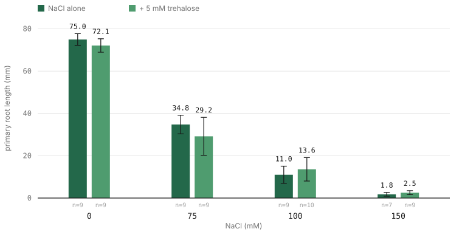
圖 1.Figure 1.第六組，移植後第 6 天（2026-08-03）的主根長。誤差棒是 1 SD，由每株的 ImageJ 原始值算出。
150 mM NaCl 單獨那組只有 7 株，100 mM 加 5 mM trehalose 那組是 10 株，其餘 9 株。
原始檔：Experiment Set 6 Root Length.docx。Set 6, day 6 after transfer, 3 August 2026. Bars are means, error bars 1 SD recomputed from the
per-seedling ImageJ values. 150 mM NaCl alone has n = 7 and 100 mM with 5 mM trehalose has n = 10; the rest are
n = 9. Source: Experiment Set 6 Root Length.docx.
0 到 150 mM 之間根長掉了 43 倍，SD 都很小。這是這個資料夾裡最乾淨的一張圖。
75 mM 那一格是我們現在用來做逆境的濃度，因為它把根長壓到對照的 46 %，還留得住可以比較的植株。
A 43-fold suppression from 0 to 150 mM with tight SDs. This is the cleanest figure in the folder.
The 75 mM column is what we now use for stress, because it takes root length to 46 % of control and still leaves
plants worth comparing.
4.3 同一批植株，兩個讀值講不一樣的話4.3 Two readouts on the same plants, disagreeing
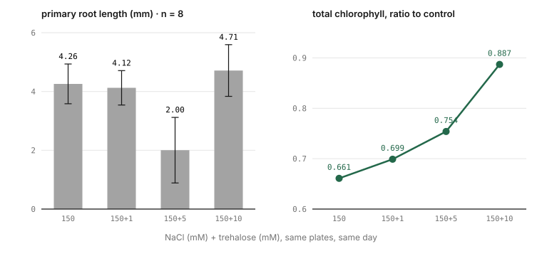
圖 2.Figure 2.第五組第二次，2026-07-27，同一批盤同一天。左：主根長，n = 8，加 trehalose 看不出趨勢。
右：總葉綠素對對照組的比值，隨 trehalose 濃度單調上升。原始檔：Experiment Set 5 Trial 2 Root Length.docx 與
Chlorophyll content for Agar plate.xlsx。Set 5 trial 2, 27 July 2026, same plates and same day. Left: primary root length, n = 8, with no
trend across trehalose. Right: total chlorophyll as a ratio to control, rising monotonically with trehalose dose.
Sources: Experiment Set 5 Trial 2 Root Length.docx and
Chlorophyll content for Agar plate.xlsx.
Kyle wrote a guess into the set 4 record: under salt, trehalose is probably not acting by restoring
root growth, and the published salt-tolerance work reads out on shoots, so we should be measuring shoot fresh weight
and rosette area. Set 5 trial 2 is consistent with that guess. We do not have rosette area yet.
Two problems we found in the chlorophyll workbook ourselves. In sets 4 and 6 the two wavelength
columns look transposed: the 645 nm readings sit above the 663 nm ones, the reverse of the other three sheets.
And in set 6, normalised per gram fresh weight, the salt-stressed groups appear to have more chlorophyll,
because fresh weight fell tenfold (control 0.1756 g against 0.0175 g at 150 mM), not because there is more
chlorophyll. We keep both normalisations of set 6 rather than picking the flattering one.
16 to 21 August, vertical plates into a 37 °C chamber, four groups: control, pre-, co- and
post-treatment, peptide sprayed on. Control came out at 0.6263 mg/g, pre-treatment 0.3482, co-treatment 0.3366,
post-treatment 0.3353. All three treated groups sit near half the control, while their fresh weights were 0.1536,
0.1369 and 0.1307 g against the control’s 0.1219 g, slightly heavier rather than lighter.
我們自己看得到的三個問題Three problems we can see ourselves
一，溫度是 37 °C，不是您建議的 33–35 °C。二，加熱的時數、有沒有 ramp、前處理是哪一天噴的，
投影片上都沒有寫。三，這張表的 OD 欄位和第四、六組是同一個可能對調的問題。所以這一組我們不敢說它代表什麼，
只能說它量出來是這樣。這是明天最想請教您的一題。
One: 37 °C, not the 33 to 35 °C you suggested. Two: how many hours of heat, whether there was a ramp,
and which day the pre-treatment was sprayed are all missing from the deck. Three: this sheet has the same possible
wavelength transposition as sets 4 and 6. So we are not claiming this set means anything, only that this is what
came out. It is the thing we most want to ask you about tomorrow.
5從 agar 到土From agar into soil
7/26 移植，7 盤 28 盆，到 8/25 為止每天拍照、每天寫紀錄。這一節有一個我們做對的比較，
和一個我們自己弄壞的實驗。Transferred on 26 July, seven trays and 28 pots, photographed and logged daily to 25 August.
This section has one comparison we set up well and one experiment we broke ourselves.
5.1 做對的：3 天苗對上 7 天苗5.1 What we set up well: three-day against seven-day
Tray 1 took three-day-old seedlings, trays 2, 3 and 4 took seven-day-old ones, all moved from agar on
the same day, 26 July. The same pots were then photographed from the same angle every day to 25 August. This is what
we have to show against what you said about the transfer being a stress in itself.
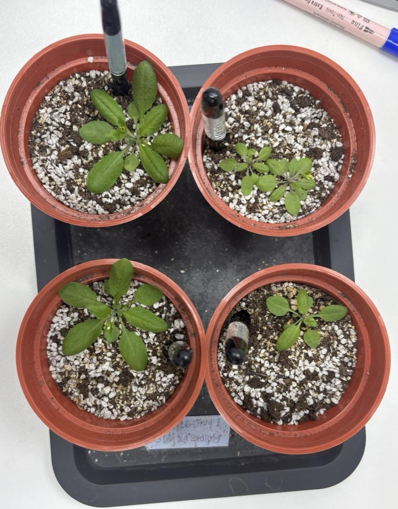
圖 3.Figure 3.2026-08-15，第 1 盤（3 天苗）。移植後第 20 天，四盆各一株蓮座，還沒抽苔。15 August 2026, tray 1, the three-day seedlings. Day 20 after transfer, one rosette per pot,
not yet bolted.
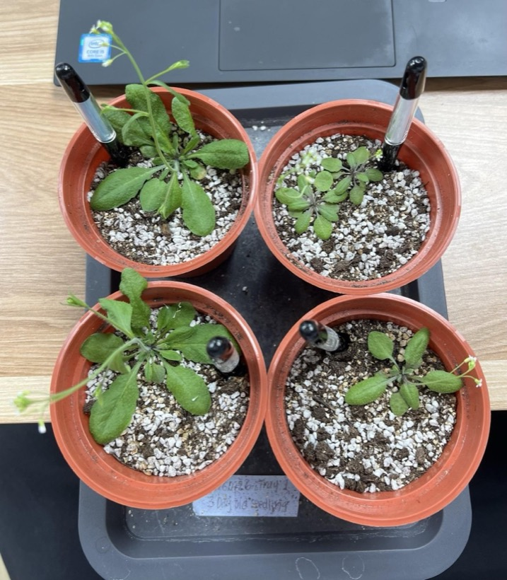
圖 4.Figure 4.2026-08-18，同一盤，移植後第 23 天，已經開花。抽苔發生在這兩張之間。18 August 2026, the same tray at day 23, in flower. Bolting happened between these two
photographs.
The bolting window sits between day 20 and day 23 after transfer. That number comes from reading the
photographs backwards, not from a measurement, because our log has no column for bolting date.
5.2 弄壞的：逆境上得太晚5.2 What we broke: the treatment went on too late
On 23 August we started the ACCD treatment on trays 3 and 4, split into pre-, co- and post-treatment
with a 150 mM NaCl control and a plain control. In the photographs from that day almost every plant across the five
groups has bolted and flowered, and several have siliques already elongating. Kyle’s feedback that day: you do
not normally run an experiment on plants that have already flowered, because vegetative growth is essentially over.
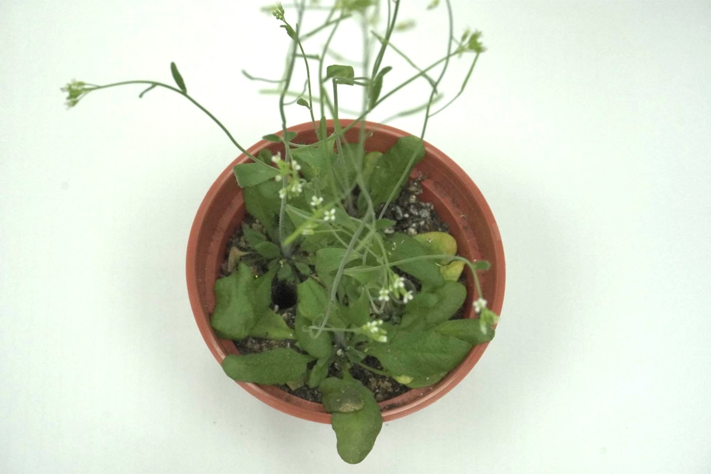
圖 5.Figure 5.2026-08-23，ACCD 前處理組開始處理的當天。花莖已經高過盆緣。
您 3/27 說的「營養生長約 14 天之後再施加」，我們是在第 28 天上的。23 August 2026, the day the ACCD pre-treatment started. The inflorescence is already above the
rim. You said to apply stress after about fourteen days of vegetative growth; we applied it on day 28.
5.3 這一個月改了什麼5.3 What we changed over the month
8/04
表面噴水改成底盤吸水Top spraying to bottom watering
8/2 到 8/4 是從土表噴。被指出之後改成把水加在底盤讓它自己吸，8/6 起的紀錄都是「added water at the bottom plate」。We sprayed the surface from 2 to 4 August. After that was flagged we moved to filling the tray and letting the pots draw it up; from 6 August the log reads “added water at the bottom plate”.
8/05–8/07
拔掉定位用的槍頭Pipette-tip markers removed
每株移植的苗旁邊插一個槍頭做位置標記。植株長大之後槍頭離太近會擋到，所以拔掉。Each transplanted seedling had a pipette tip pushed in beside it as a position marker. Once the plants were big enough the tips were in the way, so they came out.
8/13–8/23
直播盤加保濕蓋，滿兩週後拿掉Covers on the direct-sown trays, off at two weeks
第 5、6 盤是 8/10 直接下種的。8/13 被指出太乾，加蓋；8/23 滿兩週、土夠濕，開蓋。移植的那四盤全程沒有加過蓋。Trays 5 and 6 were sown directly on 10 August. On 13 August they were flagged as too dry and covered; on 23 August, two weeks old and the soil holding moisture, the covers came off. The four transplanted trays were never covered at all.
8/18–8/22
花序支撐換了三次Three goes at staking
8/18 插竹籤，8/19 用棉線綁，當天就看到原本垂下來的植株站直。竹籤被指出太短（花莖會超過 20 cm），8/22 換成粗筷子加蓮花夾。Bamboo stakes on 18 August, tied with cotton thread on 19 August, and the plants that had been leaning stood up the same day. The stakes were then flagged as too short, since the stems go past 20 cm, so on 22 August they became thicker chopsticks with lotus clips.
8/07–8/21
黴菌，一直沒斷Mould, continuously
第 4 盤 8/7 開始長黴，8/8 換土，8/10 和 8/12 各移掉一盆。8/15 有一盆連葉子上都長。8/21 第 3 盤表面出現白色菌絲。到 8/25 為止沒有停過。Tray 4 started on 7 August, its soil was changed on the 8th, and a pot was removed on both the 10th and the 12th. On 15 August one pot had mould on a leaf as well as the soil. On 21 August white mycelium appeared on tray 3. It had not stopped by 25 August.
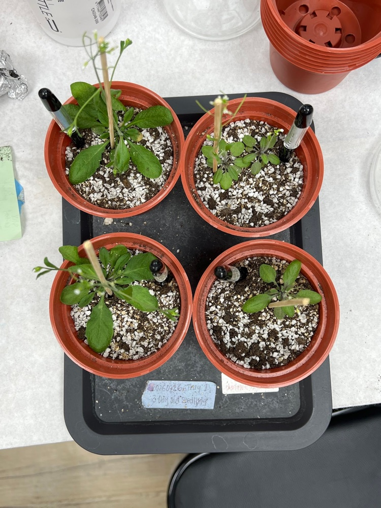
圖 6.Figure 6.2026-08-19，用棉線把花序綁上竹籤。這是我們目前為了收種子做過的全部準備。19 August 2026, inflorescences tied to bamboo with cotton thread. This is the whole of our
preparation for seed collection so far.
Survival after transfer was never counted. The 22 °C and 40 to 45 % humidity are targets written on a
slide, not logged readings. Photoperiod and light intensity are not recorded. No rosette diameter, leaf count,
fresh weight, bolting date or silique count exists. The whole line is photographs and prose. On 25 August Kyle
noted the photographs do not show the leaves clearly enough to compare treatments, and we agree.
6水耕盤The hydroponic plate
3/27 您說水耕對阿拉伯芥幼苗不穩定。我們後來還是做了六個原型，而前三個的數字證明您是對的。
這一節講我們怎麼處理，以及哪些還沒處理掉。On 27 March you told us hydroponics is unstable for Arabidopsis seedlings. We went and
built six prototypes anyway, and the first three proved you right. This section is what we did about it and what
we have not fixed.
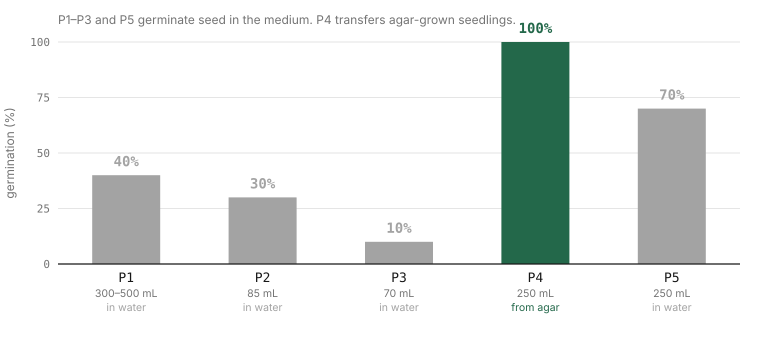
圖 7.Figure 7.五個原型的發芽率。P1 到 P3 和 P5 是把種子直接下在培養液裡，P4 是把 agar 上長好的苗移進去。
每個原型都跑 6 到 11 天。原始檔：Initial ideas/Hydroponic design.pptx 第 4 到 8 頁。Germination across five prototypes. P1 to P3 and P5 sow seed into the medium; P4 moves in
seedlings grown on agar. Each ran six to eleven days. Source:
Initial ideas/Hydroponic design.pptx, slides 4 to 8.
把容器越做越小、水越用越少，發芽率從 40 % 掉到 10 %，三個都污染。第四個我們換的不是容器，是方法：
停止在水裡發芽，改成把 agar 上長好的苗移進去，5 株全活，那一版的問題欄位寫的是「still not found」。
現在的盤走的是這條路。所以嚴格講，我們現在這個東西不是純水耕，是把 agar 放進水裡。
Shrinking the vessel and the volume took germination from 40 % to 10 %, all three contaminated. For the
fourth we changed the method rather than the vessel: stop germinating in water, move in seedlings grown on agar
instead. All five lived, and the problems field for that version reads “still not found”. The current
plate follows that line. Strictly, what we have now is not hydroponics. It is agar, placed in water.
6.1 現在這一版6.1 The current version
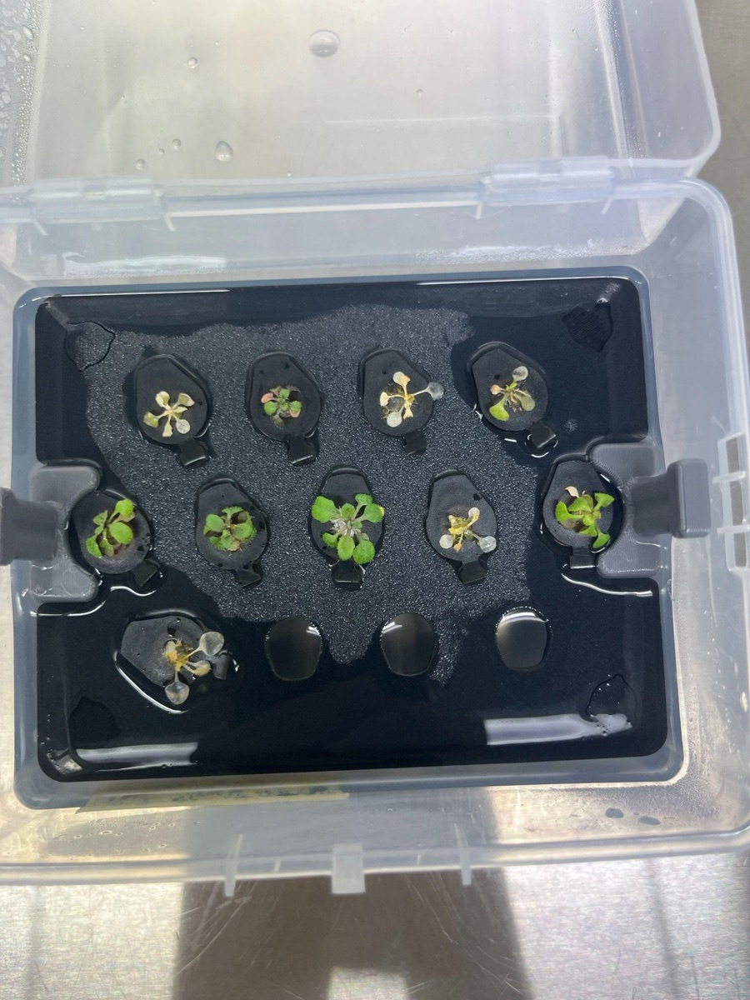
圖 8.Figure 8.2026-08-04，鹽逆境結束當天的後處理組。13 個孔位排成 4/5/4，用了 10 個。
兩側灰色的是把盤撐住的夾子。4 August 2026, the post-treatment box on the last day of the salinity run. Thirteen positions
in a 4 / 5 / 4 stagger, ten of them used. The grey pieces on each side are the clips holding the plate level.
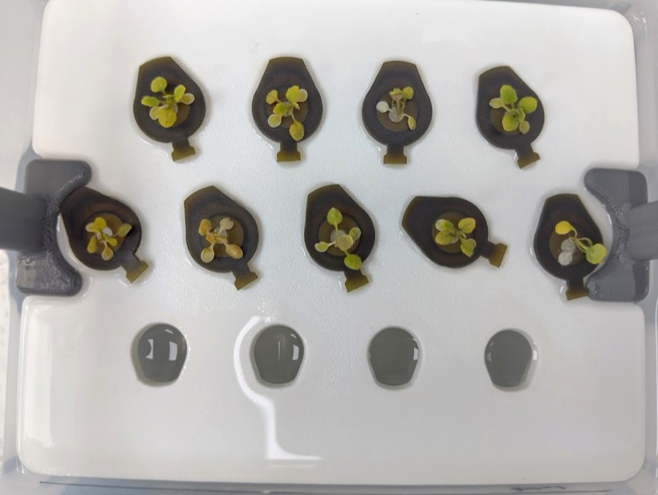
圖 9.Figure 9.2026-08-20，白色的同一個設計，用了 9 個孔位。蓋子中央那圈半透明的是 agar。
每個蓋有一個拉柄，可以單獨把一株拿出來，不動到其他株。20 August 2026, the same design in white, nine positions used. The translucent ring inside each
cap is agar. Every cap has a pull tab, so one plant can be lifted out without disturbing the others.
13孔位，排成 4／5／4 的錯位Positions, staggered 4 / 5 / 4
½ MSpH 5.7–5.8，250 mLpH 5.7 to 5.8, 250 mL
3D 列印盤和蓋都是，透明收納盒當容器Plate and caps both printed; the vessel is a clear storage box
22 °C濕度 40–45 %，目標值不是量測值40 to 45 % humidity, targets rather than readings
?盤厚、孔徑、孔距、列印參數、CAD 檔，紀錄裡都沒有Plate thickness, hole diameter, spacing, print settings and CAD file are all unrecorded
?光週期從第一份設計文件到現在都是空白The light cycle field has been blank since the first design document
25 July to 4 August, thirteen-day-old seedlings, 100 mM NaCl, four boxes and one condition each:
control, peptide three days before the salt, peptide with the salt, and peptide three days after. Ten plants a box,
photographed on each of the eleven days, with fresh weight and chlorophyll at the end.
The co-treatment group weighs 2.35 times the control. But per gram of fresh weight the chlorophyll
ordering inverts, with the control highest and co-treatment lowest. The two normalisations say different things, and
we have no replicates and no statistics: one box per condition, one extraction each. So we read this table as an
observation about fresh weight, and the two chlorophyll columns do not support a conclusion.
6.3 還沒解決的6.3 Not fixed
污染，從頭到現在Contamination, throughout
第一個原型就有，8/16 那天四個盒子全部中。中間沒有出現過任何滅菌步驟或對策。
Present from the first prototype, and on 16 August all four boxes at once. No sterilisation step or countermeasure appears anywhere in between.
7/4 那次，沒有結論4 July, undiagnosed
發芽 6/6 之後五天，葉子枯、莖全黑、根上和培養液裡都長東西。沒有追下去，也沒有鑑定。
Five days after 6 of 6 germinated: withered leaves, stems gone black, growth on the roots and in the medium. Never followed up, never identified.
On 18 August one side tilted and the middle row sat in the medium; on 19 August a cap was not seating fully; on 25 August medium covered the leaves. A buoyancy and tolerance problem, still open on the last day of records.
7/13 之後不再數發芽Germination counts stop after 13 July
274 頁紀錄裡，發芽數那一欄從 7 月中之後都是空的。所以鹽逆境和熱逆境沒有存活曲線。
Across 274 slides the germination field is blank from mid-July on. So neither the salinity nor the heat run has a survival series.
The students would like to bring two complete plates over and leave them with you, if you would be
willing to try one in your own lab. What we would rather know is not whether it works, but where you would see the
problem first.
To fill: confirm which two actually go tomorrow The longest-running
paired comparison in the record is aerated against unaerated, 25 July to 8 August. If that line continues,
A is the aerated one.
培養液Medium
½ MS, pH 5.7–5.8, 250 mL
孔位Positions
13
SETUP B
沒打氣的一套The unaerated one
待填同一個盤、同一個培養液，差別只有打氣。
8/25 我們另外還跑了 ½ MS 對 0.1 MS，0.1 MS 那盒當天就出現葉子白化，所以濃度我們建議先維持 ½ MS。
To fill Same plate, same medium, aeration the only difference. On
25 August we also ran ½ MS against 0.1 MS, and the 0.1 MS box showed leaf whitening the same day, so we would
suggest staying at ½ MS.
培養液Medium
½ MS, pH 5.7–5.8, 250 mL
孔位Positions
13
7明天下午想和您做的五件事Five things we hope to do tomorrow
8/28（五）14:00，您的實驗室。學生 待填：人數 位，指導老師 待填 位。Friday 28 August, 14:00, your lab. To fill: how many students and
to fill instructors.
我們會帶過去的：兩套水耕盤、agar 的直立盤與 ImageJ 的量法、
這一頁所有數字的原始檔（pptx、xlsx、docx）。What we will bring: the two plates, the vertical agar plates and how we trace them in ImageJ, and
the source files behind every number on this page.
8九個問題Nine questions
每題附我們目前的想法，讓您可以修正而不必從零講起，並註明您的答案會改變什麼。Each carries our current thinking, so you can correct it rather than start from scratch, and a
line on what your answer would change.
Our bacteria secrete ACC deaminase, which cleaves the ethylene precursor and so lowers the plant’s ethylene signal. Does that also suppress the ERF1 defence branch?
Reading your lab’s pages, ERF1 is described as the transcriptional activator that
integrates hormone crosstalk with stress responses, and your work showed it is ubiquitinated by UBC18 and degraded
in the dark. The ACCD literature we have consistently frames suppressing the second ethylene peak as good for the
plant, with Glick reporting 50 to 90 % reductions. What we have not found is anyone asking whether pulling the
ethylene signal down also switches off the stress genes downstream of ERF1. This is the one that worries us
most. If the answer is yes, the logic behind our whole choice of protectant needs rethinking.
會改變什麼：What it changes:ACCD 要不要繼續當主要的 protectant，還是改成只在特定逆境、特定時間窗口用。Whether ACCD stays as the primary protectant, or becomes something used only for particular stresses in a particular window.
Q2
熱逆境我們用了 37 °C，比您建議的 33–35 °C 高。三個處理組的葉綠素都掉到對照的一半，鮮重卻沒有掉。是溫度太高把差異洗掉了嗎？
We ran heat at 37 °C, above the 33 to 35 °C you suggested. All three treated groups came out at about half the control’s chlorophyll while their fresh weights held. Did the temperature wash the difference out?
數字在 4.4。我們自己想得到的解釋有三個，分不出來：
37 °C 太重，處理組和對照一起崩到看不出差別；或是胜肽用噴的，噴在葉子上的量本身影響了葉綠素的萃取；
或是那張表的兩個波長欄位對調了，跟第四、六組同一個問題。這一題我們沒有能力自己排除。
The numbers are in 4.4. We can think of three explanations and cannot
separate them: 37 °C was heavy enough that treated and control collapsed together; or spraying the peptide onto the
leaves affected the extraction itself; or the two wavelength columns on that sheet are transposed, the same problem
sets 4 and 6 have. We do not have a way to rule any of them out on our own.
會改變什麼：What it changes:下一輪熱逆境的溫度、時數，以及要不要改成不噴葉子的施用方式。The temperature and duration of the next heat run, and whether to stop applying anything onto leaves.
Q3
150 mM 以上根長幾乎歸零，但葉綠素還看得到 trehalose 的劑量反應。我們是不是該把主要讀值換成地上部？
Above 150 mM root length is essentially zero, yet chlorophyll still shows a trehalose dose response. Should our main readout move to the shoot?
The evidence is Figure 2: same plates, same day, no trend across the
four root-length groups while the chlorophyll ratio climbs from 0.661 to 0.887. Kyle had already guessed that
trehalose under salt is not acting through root growth, and that the published salt work reads out on shoots. We
have fresh weight, but no rosette area, no leaf count and no shoot dry weight. On a day-6 seedling, which shoot
readout is steadiest and least disturbed by the handling itself?
會改變什麼：What it changes:第九組開始量什麼，以及 wiki 上我們拿哪一個讀值當主要證據。What set 9 measures, and which readout carries the claim on the wiki.
Q4
ROS 染色我們一次都還沒做。在我們這種 Day 6 的 agar 苗上，什麼時間點染最看得出處理組之間的差別？
We have never done a ROS stain. On day-6 agar seedlings like ours, when is the best moment to stain if we want to see a difference between treatments?
You suggested NBT and DAB back on 27 March and we never scheduled it, honestly because
nobody in the team has done one. The plan now is to add it to the ACCD line in set 8, which is short of a visible
readout anyway. What we are unsure about is how long after the salt goes on to stain, and whether to stain daily
first to find the window.
會改變什麼：What it changes:第八組要不要在 9 月重跑一次，把染色排進去。Whether set 8 gets rerun in September with staining built in.
B · 實驗設計與 protocolB · Design and protocol
Q5
我們現在跑的 ACCD 實驗缺一個 ACCD-negative 的菌對照。您會怎麼設這個對照？
Our running ACCD experiment has no ACCD-negative bacterial control. How would you set that control up?
第八組現在是 ACCD 配 0／75／100 mM NaCl，兩個 trial 都在跑。
問題是紀錄裡沒有寫菌株、沒有寫是活菌、菌液還是純化的酵素、沒有寫劑量，也沒有一個「同樣的菌但不表現 ACCD」的組。
沒有那一組，任何一個正向結果都可以被說成是枯草桿菌本身的促生長作用。
我們自己想到的是用空載體的同一株菌，但不確定在 agar 盤上要怎麼控制接種量才公平。
Set 8 is currently ACCD against 0, 75 and 100 mM NaCl in two trials. The problem is the
record does not name the strain, does not say whether this is live cells, a supernatant or purified enzyme, gives
no dose, and has no group carrying the same organism without ACCD. Without that, any positive result can be
attributed to B. subtilis’s own growth-promoting activity. Our own idea is an empty-vector version of
the same strain, but we are not sure how to match the inoculum fairly on an agar plate.
會改變什麼：What it changes:第八組要不要在這禮拜停下來重設計，還是先跑完再補對照。Whether set 8 stops this week to be redesigned, or finishes and the control is added after.
Q6
移植時的保濕蓋，具體要怎麼做？蓋多久、什麼時候拿掉？
The humidity cover at transfer: what does it actually look like, and how long does it stay on?
On 27 March you said the transfer itself activates stress-responsive genes and suggested
holding humidity. We did not do it, because nobody asked what “a cover” meant in practice. The only
covers in the soil line went onto the direct-sown trays 5 and 6, after they had already dried out, and came off two
weeks later. We would like to get it right from the start on the next batch.
會改變什麼：What it changes:9 月那批移植的 SOP，以及我們能不能宣稱移植逆境有被控制住。The SOP for September’s transfer, and whether we can claim transfer stress was controlled at all.
BoPep4 is a broccoli elicitor peptide and we will be testing it on Arabidopsis. Should the readout be root-growth inhibition, or salinity rescue?
六個 DNA 構築 8/20 已經下單，合成胜肽同時訂了。發表這個胜肽的那篇講的是耐鹽，
但整個 Pep 家族的定量文獻讀的都是免疫反應，多半用 medium alkalinization 或 ROS burst。
我們想拿劑量反應曲線，根長抑制最便宜也給得出曲線；但如果要對上產品的說法，該做的是鹽逆境救援。
而且 BoPep4 是 Brassica 的胜肽，接到阿拉伯芥的 PEPR1 上，跨物種本身就是一個變數。
Six DNA constructs went in on 20 August with synthetic peptides ordered alongside. The
paper that published this peptide is about salt tolerance, but the quantitative Pep literature is all immunity,
mostly medium alkalinisation or the ROS burst. We want a dose-response curve, and root-growth inhibition is the
cheapest thing that gives one. If the claim is about the product, salinity rescue is what matters. And BoPep4 is a
Brassica peptide docking onto Arabidopsis PEPR1, so the species jump is itself a variable.
會改變什麼：What it changes:胜肽到貨之後第一輪做哪一個 assay，以及要不要同時跑一個 Brassica 對照物種。Which assay runs first when the peptides arrive, and whether a Brassica species runs alongside.
Q8
這個水耕盤，您會先在哪裡看出問題？
Looking at this plate, where would you expect it to fail first?
Two we already know: contamination has not stopped since the first prototype, and the
plate tilts so the middle row sinks into the medium (6.3). What we want is the third one, the
one we have not seen. You showed us what you had learned from your own hydroponic work on 27 March; if anything
there is still unhandled in this design, that is what we most want to hear tomorrow.
會改變什麼：What it changes:下一版盤的幾何，以及水耕這條線要不要繼續留在專案裡。The geometry of the next plate, and whether the hydroponic line stays in the project at all.
C · 種子C · Seeds
Q9
您願意再給我們一些種子，我們想先問該拿哪些品系；另外想跟您學怎麼收種子。
You offered us more seed. We would like to ask which lines to take, and to learn how you collect seed.
Everything we run at the moment is wild type, under salt or heat. Your lab used translatome
analysis to pull out stress genes whose mutants are less salt-tolerant. If we could take one or two of those lines
as a reference, our salinity curve would have an anchor other than our own control. What we would like to ask is
whether that is sensible on our timescale, or whether getting the wild type solid is the better use of the weeks
left.
On collecting: we have only got as far as tying the inflorescences to stakes
(Figure 6). Bagging, when to cut, drying, and keeping lines from mixing are all things we have
never done. We would rather learn that part standing next to you than look it up.
會改變什麼：What it changes:9 月起我們自己能不能不斷種源，以及鹽逆境曲線上要不要加突變株當參考。Whether we can keep our own seed supply going from September, and whether a mutant line joins the salinity curve as a reference.
94 月到現在April to now
植物只是這個專案的一部分。這一節是同一群學生這五個月的其他時間。
開場那四張（正瀚、陳惠雯的田、8/13 的濕實驗室、源鮮）也屬於這幾個月，這裡不重複。The plants are one part of this project. This section is where the same students spent the rest of
these five months. The four photographs at the top (CH Biotech, the field, the wet lab on 13 August, YesHealth)
belong to these months too and are not repeated here.
04沒有照片。4 月做的是決定：4/15 把題目從光學輸出翻成偵測土壤逆境、輸出保護劑，
4/18 和 Dr. Pak 談反應器該長什麼樣，4/25 把中空纖維膜的算式推完。這些只有文字紀錄。No photographs. April was decisions: on the 15th the project turned from an optical
output to sensing soil stress and delivering a protectant, on the 18th Dr. Pak set out what the reactor had to
be, and on the 25th the hollow-fibre maths was worked through. Text records only.
05開始動手。買零件、焊光學板、寫韌體，同一個月第一個水耕原型也下水了。Building starts. Parts, boards, firmware, and the first hydroponic prototype in the
water the same month.
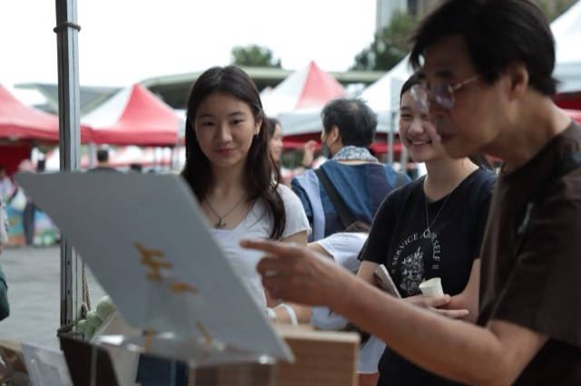
2026-05-16 農民市集。一位種稻的攤主指著他手寫的價目牌，跟我們講他實際會買什麼。16 May 2026 · the farmers’ market. A rice grower points at his own hand-lettered price card and tells us what he actually buys.
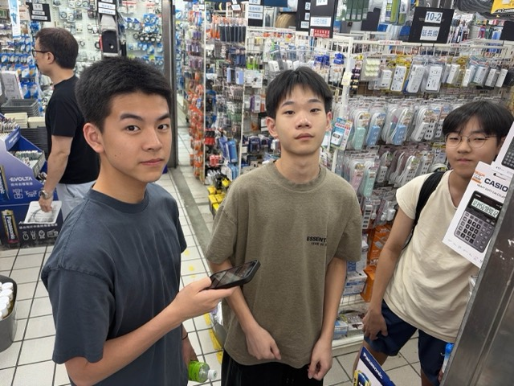
2026-05-21 光華商場。照著清單找零件。21 May 2026 · the Guanghua electronics market, working down a parts list.
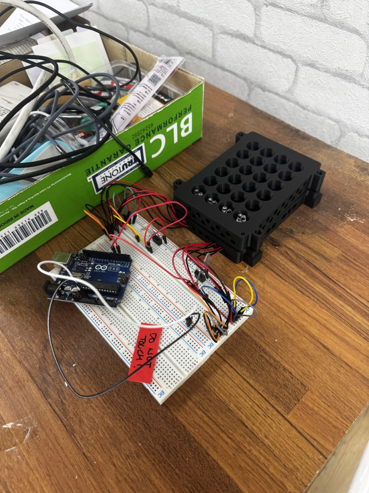
2026-05-27 組裝 24 孔的光照板。紅色膠帶上是手寫的 DO NOT TOUCH。27 May 2026 · assembling the 24-well light plate. The red tape says DO NOT TOUCH, in someone’s handwriting.
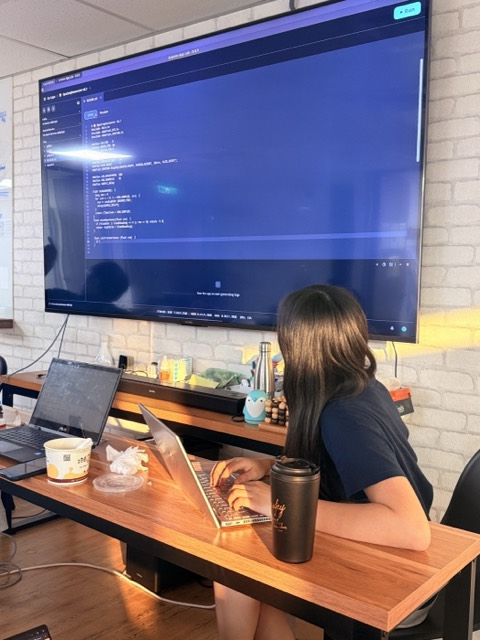
2026-05-28 放學後寫光度計的韌體。28 May 2026 · writing the photometer firmware after school.
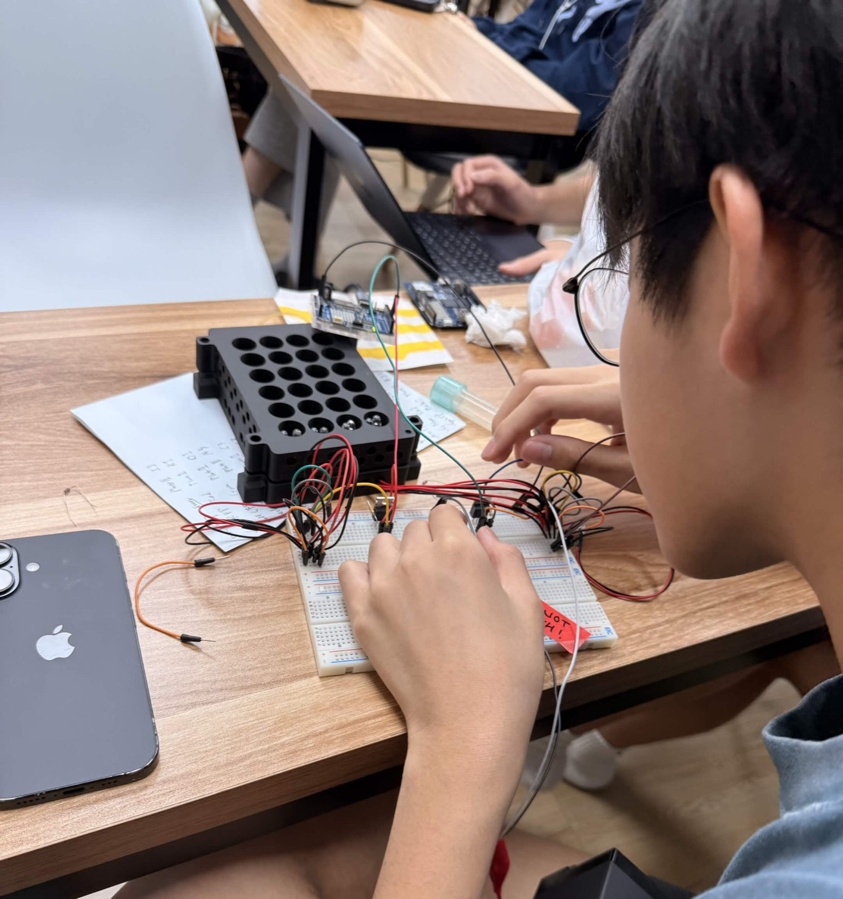
2026-05-30 整套控制系統，和做出它的人。麵包板、跳線、列印的架子，和一張用鉛筆寫出來的腳位表。30 May 2026 · the entire control system, and the people who build it. A breadboard, jumper wire, a printed rack, and a pin-assignment sheet worked out in pencil.
06第一次亮燈，也是第一次被兩位教授從頭到尾檢查一遍。同一個月 agar 換成直立盤，根長才開始有數字。First light, and the first time two professors went through the whole thing with us.
The same month the agar plates turned vertical and root length started producing numbers.
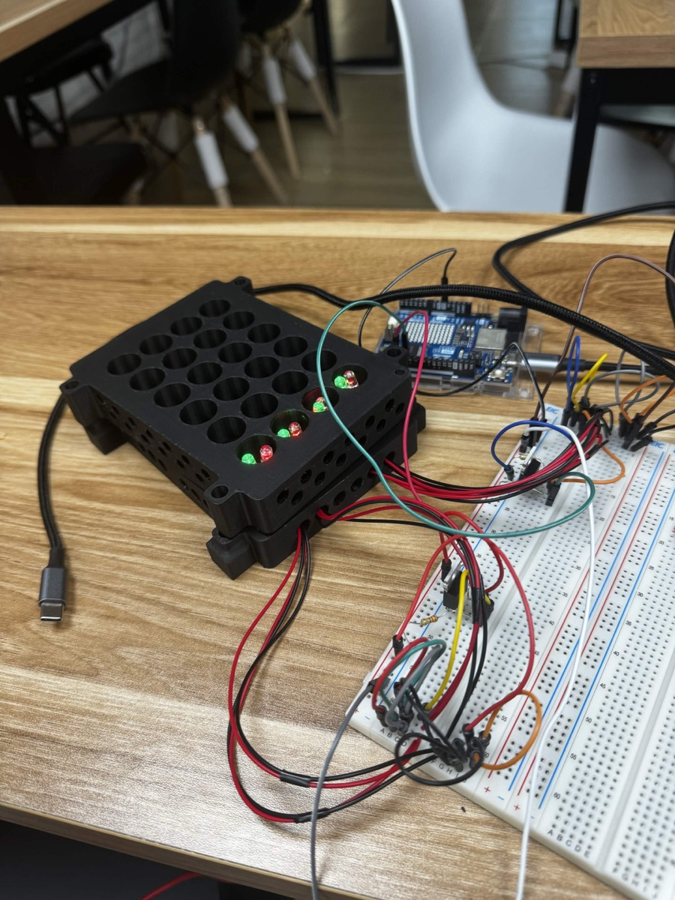
2026-06-01 24 孔板第一次亮燈，綠色和紅色一次一孔。1 June 2026 · the 24-well plate lit for the first time, green and red, one well at a time.
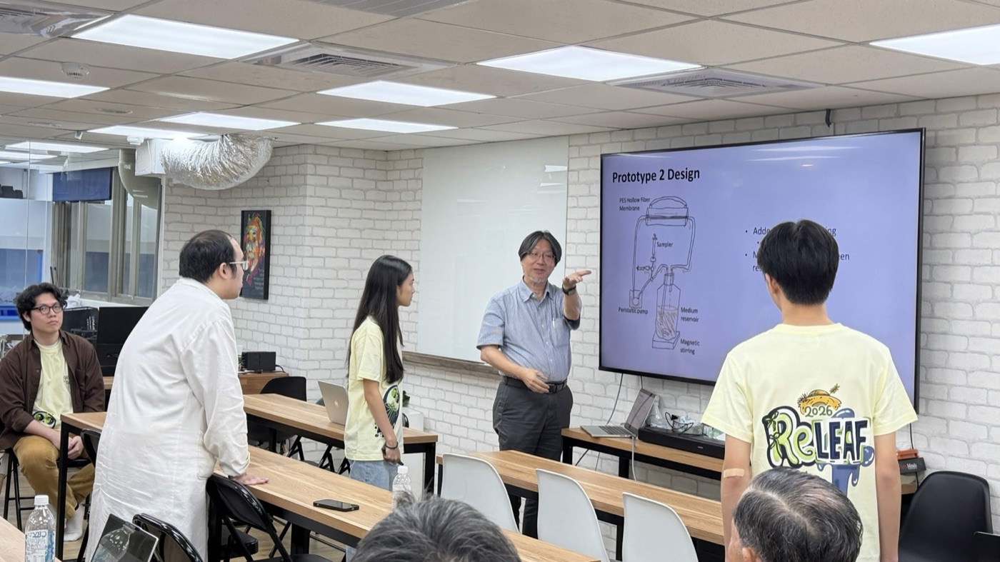
2026-06-18 張嘉修校長就投影幕上的 Prototype 2 提出建議。18 June 2026 · Prof. Chang advising on the Prototype 2 design on screen.2026-06-18 合影，背後是當天的 General Feedback，桌上是反應器原型本體。18 June 2026 · the group photograph. The screen carries that day’s general feedback; the prototype itself is on the table.
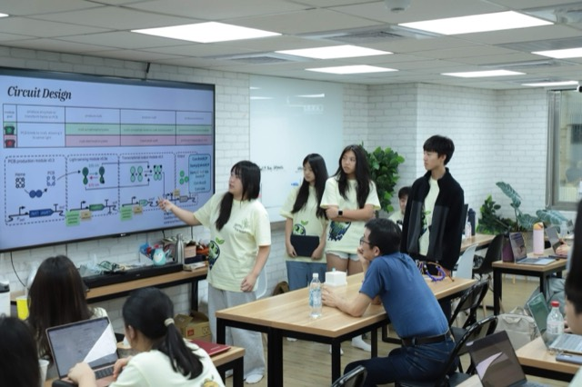
2026-06-20 陳文亮老師聽學生講線路設計。20 June 2026 · Prof. Chen listening to the students present the circuit design.
07最忙的一個月。光學平台重做、去了展覽、去了小學、去了陳惠雯老師的田，
同一個月水耕做完第五個原型，agar 拉到 250 mM。The busiest month. The optical bench rebuilt, an exhibition, a primary school, a field.
The same month the fifth hydroponic prototype ran and agar went out to 250 mM.
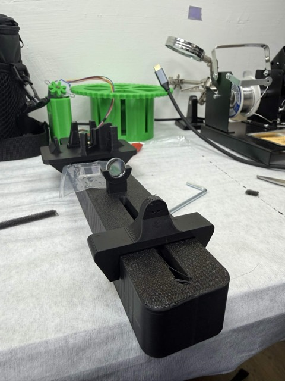
2026-07-02 光學平台。透鏡座和整條光路都看得到，機構是自己畫自己印的。2 July 2026 · the optical bench. The lens mount and the whole beam line are visible; the mechanics were drawn and printed in house.
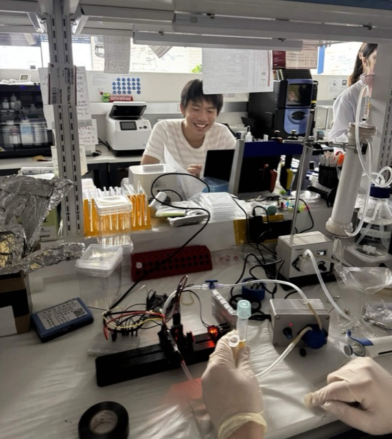
2026-07-02 反應器運轉中取樣。膜模組、管路和泵都在畫面裡。2 July 2026 · drawing a sample while the reactor runs. The membrane cartridge, the tubing and the pump are all in shot.
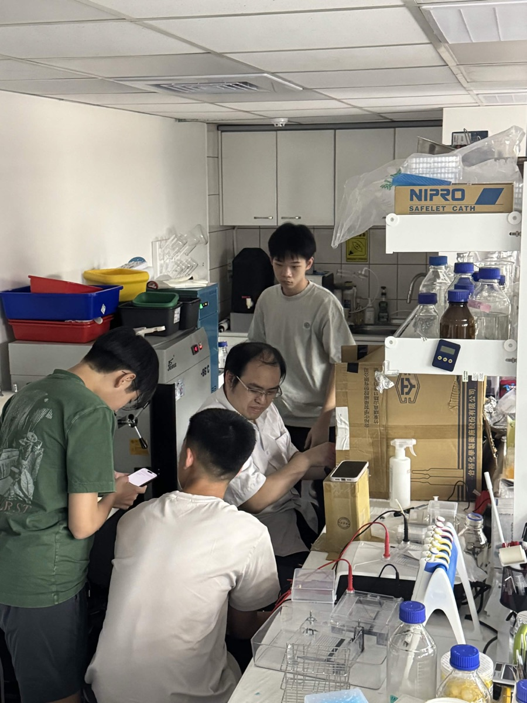
2026-07-04 狹窄的實驗室，前景是膠片槽和試劑瓶。4 July 2026 · a cramped lab, the gel tank and reagent bottles in the foreground.
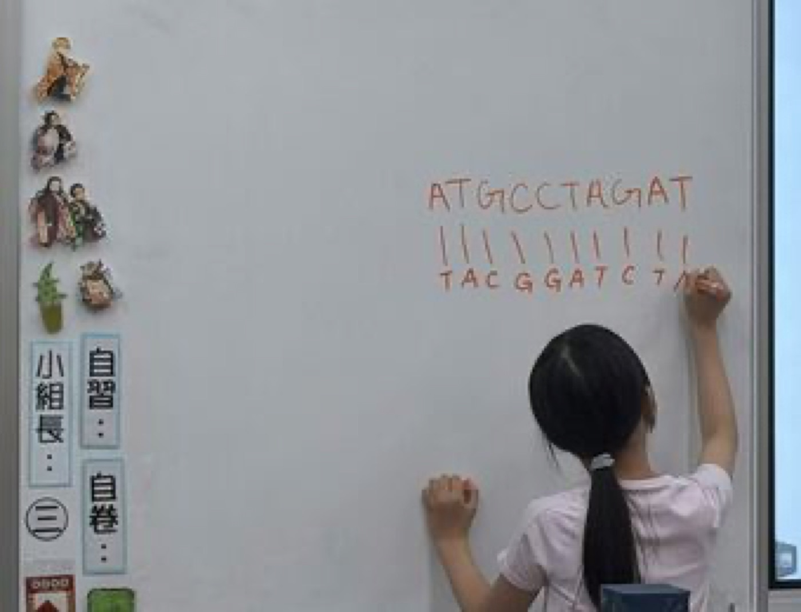
2026-07-14 小學的推廣場次。白板上的 ATCG 是一位小學生寫的。14 July 2026 · a primary-school session. The ATCG on the board was written by a pupil.
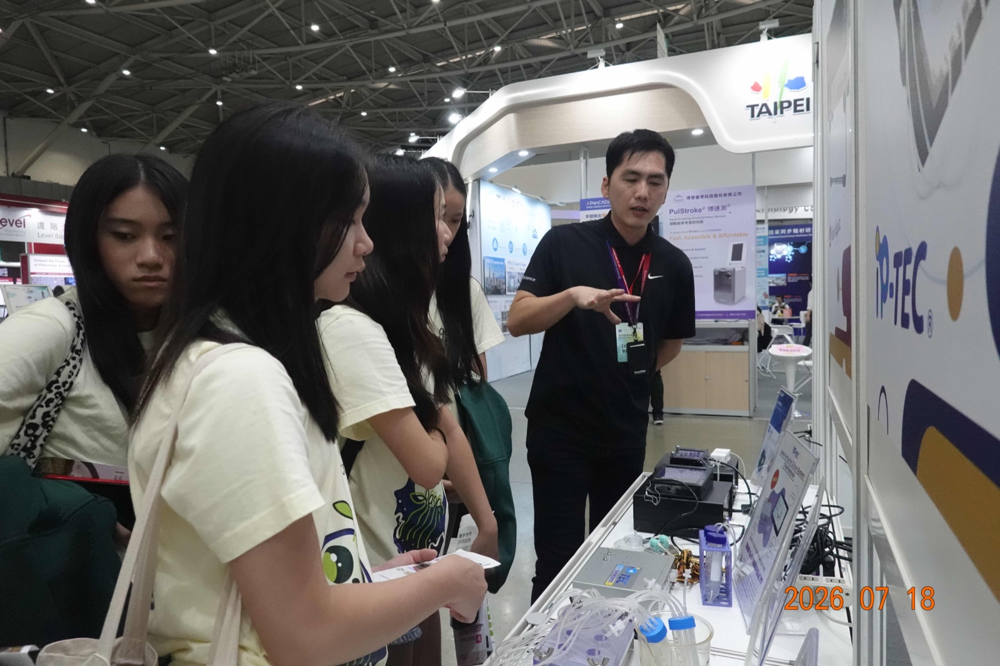
2026-07-18 BioAsia Taiwan。廠商在說明一台中空纖維的設備，學生站著記。18 July 2026 · BioAsia Taiwan. A vendor explaining a hollow-fibre rig while a student takes notes.
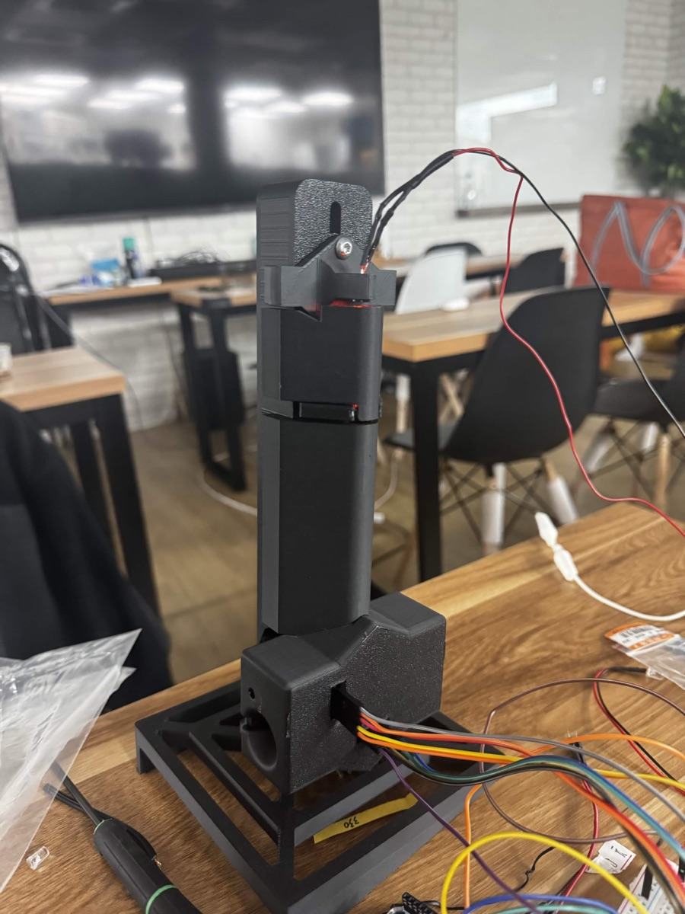
2026-07-19 做好的線上光度計。當天稍晚我們自己發現它比 BioDrop 高估約四倍。19 July 2026 · the finished in-line photometer. Later the same day we found it reading about four times high against BioDrop.
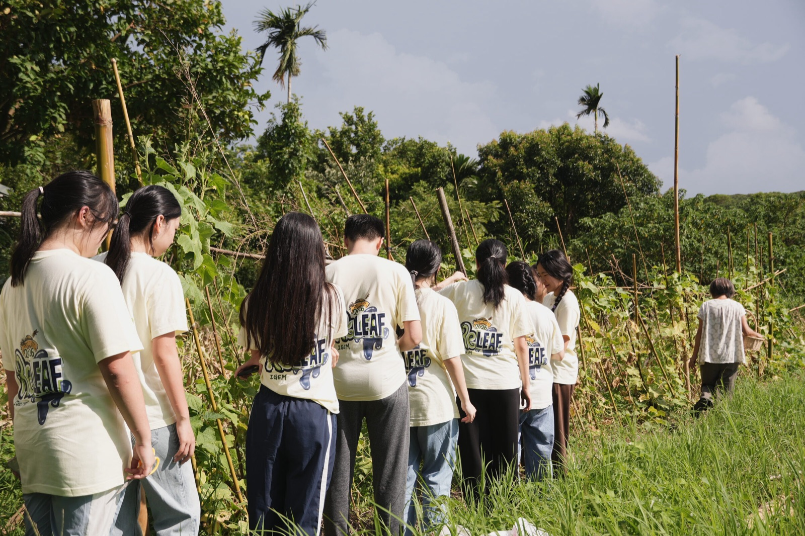
2026-07-21 走進陳惠雯老師的田。九個人，一個下午。21 July 2026 · walking into Chen Hui-wen’s plot. Nine of us, one afternoon.
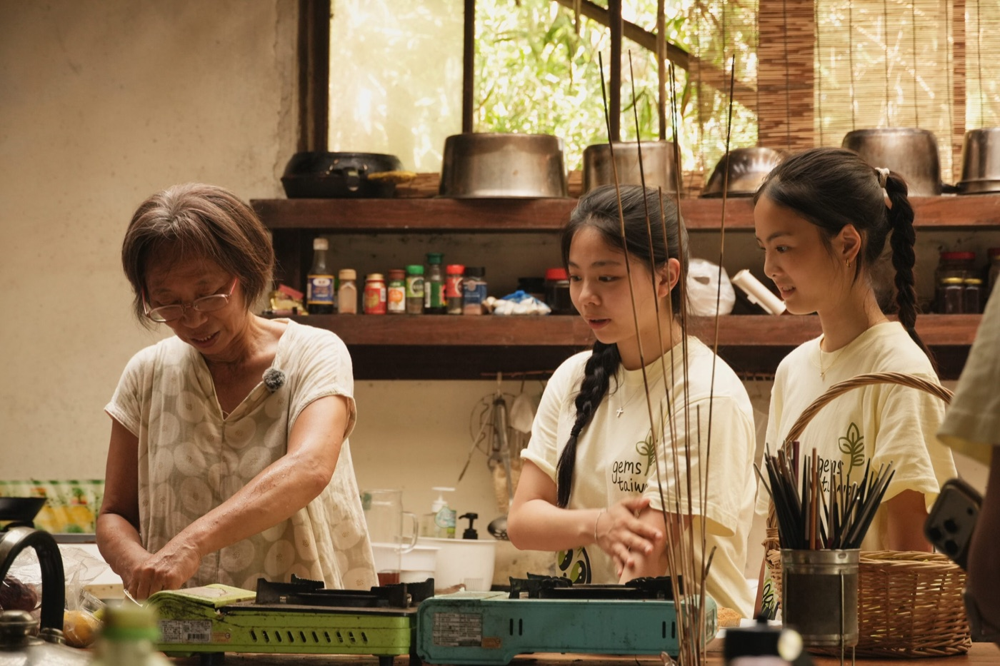
2026-07-21 同一天，她煮飯給我們吃。21 July 2026 · the same day. Then she cooked for us.
08植物、反應器、感測器同時在跑。土耕從 7/26 移植之後每天記錄，agar 進到第七、第八組，
水耕在 8/16 到 8/20 做熱逆境。Plants, reactor and sensors all running at once. Soil logged daily since the 26 July
transfer, agar into sets 7 and 8, and the hydroponic heat run from 16 to 20 August.
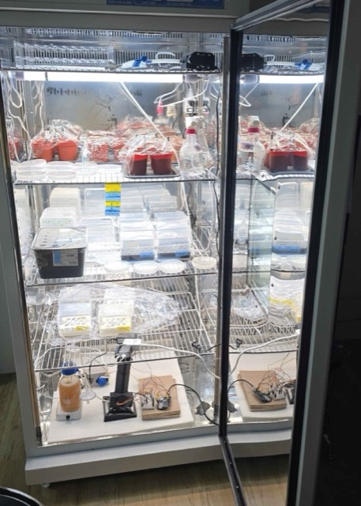
2026-08-03 長時間試驗的配置：反應器、線上光度計、植物同在一個培養箱。3 August 2026 · reactor, in-line photometer and plants in one incubator.
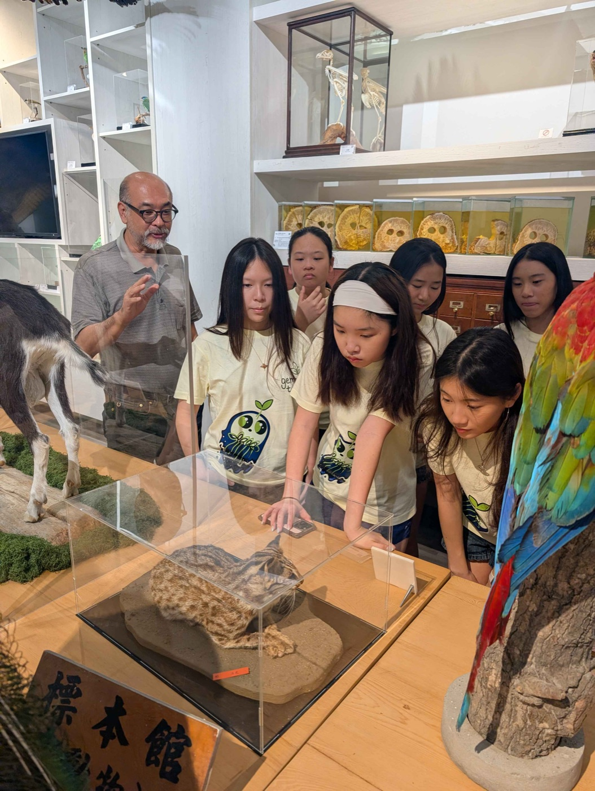
2026-08-06 拜訪黃介辰老師，在標本館。6 August 2026 · visiting Prof. Huang at the specimen museum.
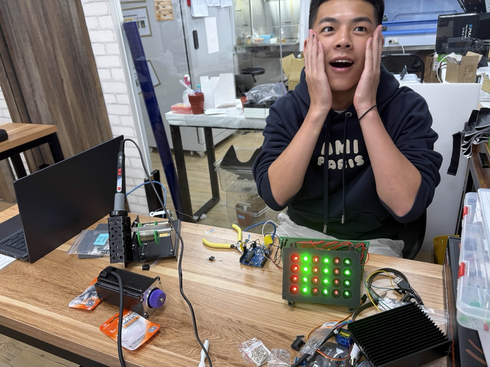
2026-08-07 整片 LED 陣列兩個波長一起在 PWM 下亮起來的那一刻。7 August 2026 · the whole LED array lighting at both wavelengths under PWM.
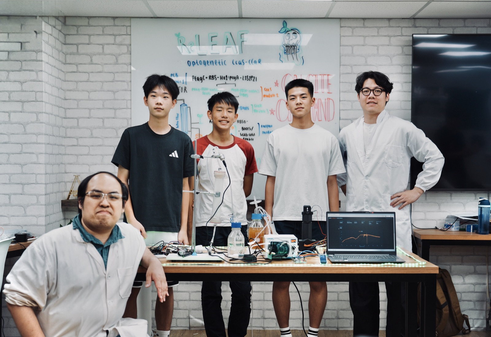
2026-08-08 為了拍比賽影片暫時組起來的。實際運轉時綠燈只纏血清瓶，筆電上是光度計即時畫的曲線。8 August 2026 · assembled temporarily for the competition video. In a real run the green light only wraps the serum bottle; the laptop shows the photometer drawing live.
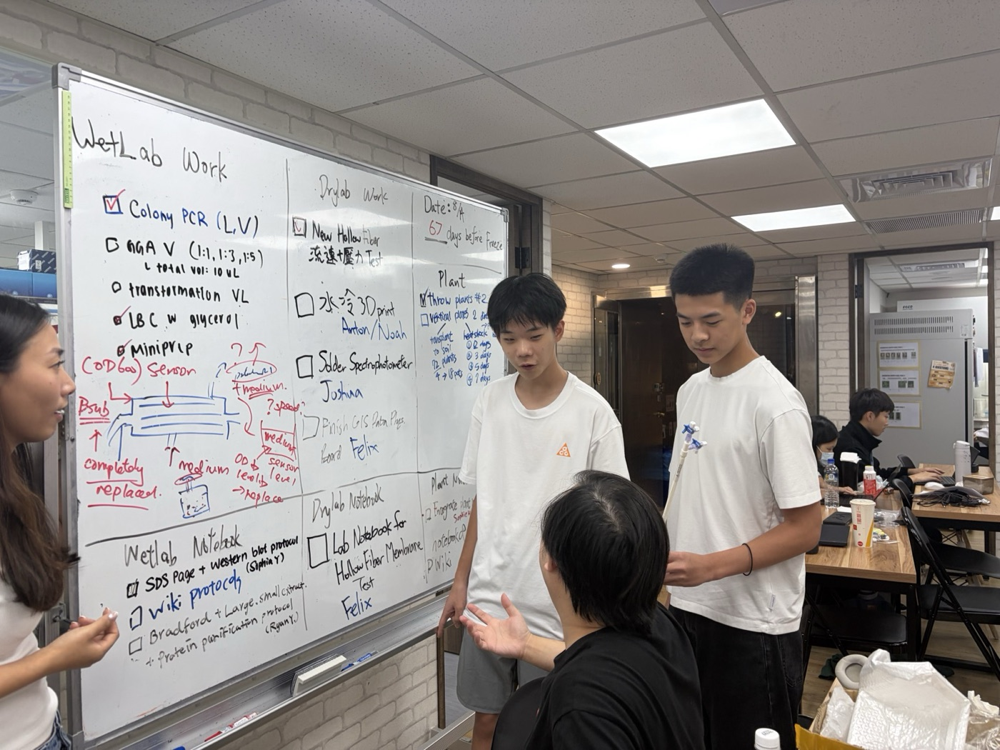
2026-08-15 討論下一代腔體設計。15 August 2026 · working through the next chamber design.
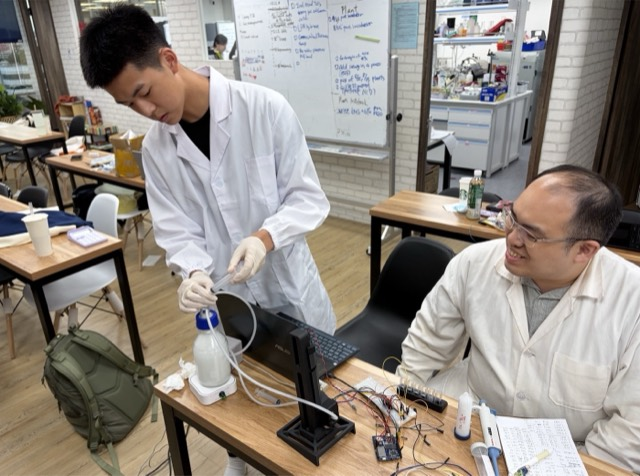
2026-08-23 光度計的 TiO₂ 校正序列。指導老師 Chars 在旁邊逐點手寫紀錄。23 August 2026 · the photometer’s TiO₂ calibration series, with Chars recording each point alongside.
全隊GEMS Taiwan 2026，四十幾個人。植物、硬體、乾實驗、教育推廣分在不同組，這一頁上的數字是其中兩組做的。GEMS Taiwan 2026, more than forty people. Plants, hardware, dry lab and outreach sit in
different subteams; the numbers on this page come from two of them.
Hydroponic system/hydroponic testing record.docx；Chlorophyll content for hydroponic system.xlsx
引用References
Hontzeas, N., Zoidakis, J., Glick, B.R., & Abu-Omar, M.M. (2004). Expression and characterization of 1-aminocyclopropane-1-carboxylate deaminase from the rhizobacterium Pseudomonas putida UW4. Biochimica et Biophysica Acta 1703(1): 11–19. （KM、kcat、pH 最適值的來源）(source of KM, kcat and the pH optimum)
Glick, B.R. (2014). Bacteria with ACC deaminase can promote plant growth and help to feed the world. Microbiological Research 169(1): 30–39.
Wang, X. et al. (2022). BoPEP4, a C-terminally encoded plant elicitor peptide from broccoli, plays a role in salinity stress tolerance. International Journal of Molecular Sciences 23(6): 3123.
Tang, J. et al. (2015). Structural basis for recognition of an endogenous peptide by the plant receptor kinase PEPR1. Cell Research 25: 110–120.
Lichtenthaler, H.K. (1987). Chlorophylls and carotenoids: pigments of photosynthetic biomembranes. Methods in Enzymology 148: 350–382. （8.02／20.20 係數）(the 8.02 and 20.20 coefficients)